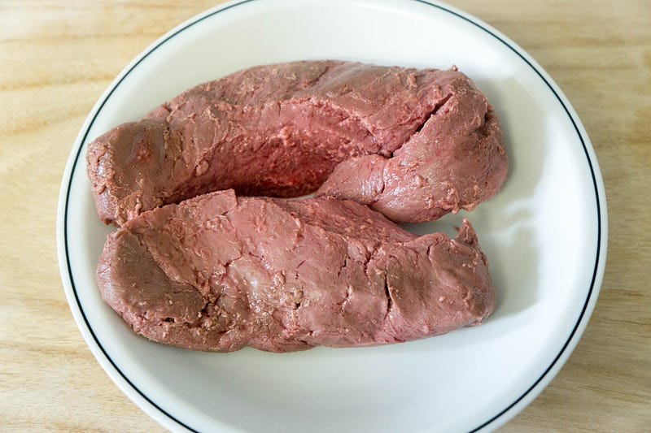
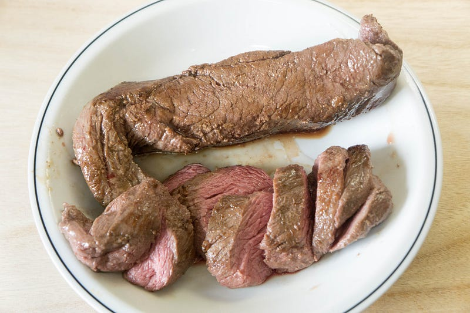

カンガルー肉をanovaでやる
カンガルー肉をanovaでやる
いつものMeatguyを見ていたら、カンガルー肉があった。やるしかない。ということで購入した。
商品説明 サーロインはカンガルー肉の最高級部位です。 もちろんカンガルーステーキが一番！ 召し上がり方 ミディアムレアがオススメ！脂肪がほとんどないのでウェルダンだとパサついてしまう！表面を直火であぶっていただく、タタキも美味！ 『えっ…www.themeatguy.jp
前回はこちら
今回初めてカンガルー肉を調理するにあたり、主にオーストラリア発の料理情報サイトを色々見て回ったが、とにかくどれもこれも「ヘルシー！ヘルシー！」と言いまくっている。これはどういうことかというと、脂肪が少ないということであり、同時に調理すると硬くなる、ということである。いくつかの資料には「カンガルーの体脂肪率は2%」とか、ほんとかそれ、みたいな情報もあったくらいなので、とにかく淡泊な肉質なのは違いない。ということは参考になる調理方法は牛フィレステーキのそれくらいだ。
そういうわけでいつも参考にしてるSerious Eatsで確認すると、牛フィレステーキの調理方法を確認してそれでいくことに。
Steak is one of the most popular foods to cook for first-time sous-vide enthusiasts, and with good reason. It takes all…www.seriouseats.com
で、今回は57℃、2時間。はい、いつものおいしくなさそうなひきあげ直後の肉。

で、焼いた後の肉がこの後にあげたもの。急いでいたので写真の皿がちょっと汚いのは申し訳ない… でも狙った通り、フィレミニョンステーキのレア気味ミディアムレアに出来た。
食感もすごく柔らかくできあがってて、オーストラリアでカンガルー肉を食べてきて「すっごい硬かった」と言っていた妹にも「これは柔らかい！」と言っていただけたので満足。

この肉はドリップが結構ある。味が似てるという意味では決してないが、ドリップがどばどばでるところがなんとなく鯨肉っぽい。赤身肉が好きな人にはたまらない、とは思う。
とはいえ、赤身の肉の血が滴る感じが好きな人は塩胡椒で充分いけるけど、なんせ淡泊な肉なので、今回試しておいしかったデミグラスソースをかけて食べるのをおすすめする。
今回は付け合わせに生マッシュルームを合わせたので、それを軽く炒め煮した後の残り汁にこのソースを合わせて作った。
デミグラスソースがいい感じに足りないコク等をおぎなってくれる。デミグラスソースじゃなくてもいいけど、なんかこってり系のソースをかけるといいと思う。
というわけで、カンガルー肉は硬いという印象を持っている方々はぜひ低温調理で試してほしい。すごくおいしかったです！